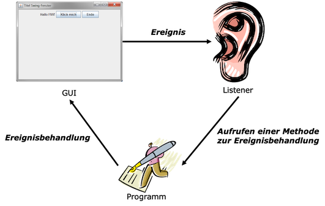

Ereignisse¶
Im vorangegangenen Kapitel haben wir gelernt, wie wir Grafische Nutzeroberflächen (GUI) erstellen können. Nun wollen wir uns anschauen, wie auf Ereignisse reagiert werden kann, die die Nutzerin auf dieser Grafischen Oberfläche auslöst. Wenn wir beispielsweise in unserem Taschenrechner auf einen Button klicken, dann soll entweder die Ziffer in dem Textfeld oben erscheinen oder es soll die Operation ausgeführt werden, auf die wir geklickt haben. In grafischen Nutzeroberflächen gibt es nicht nur Buttons, auf deren Klick-Ereignisse wir reagieren wollen, es gibt auch Eingaben über die Tastatur, das Fenster kann mit der Maus bewegt, vergrößert oder verkleinert werden, es können Kontextdialoge durch das Drücken der rechten Maustaste geöffnet werden usw. Wir lernen hier, welche unterschiedlichen Ereignisse es gibt und wie wir diese behandeln können, d.h. wie wir die Reaktion auf diese Ereignisse implementieren.
Zunächst überlegen wir uns, wie es überhaupt möglich sein kann, dass Ereignisse (also Aktionen der Nutzerin) auf unserer grafischen Oberfläche erkannt werden und auf diese Ereignisse entsprechend reagiert werden kann. Man könnte (in einer Schleife) permanent bei der Maus oder der Tastatur anfragen, ob eine Taste gedrückt oder ob die Maus bewegt wurde. Das ist aber viel zu imperformant und würde das Programm blockieren. Diese Aufgabe wird nämlich von der Laufzeitumgebung automatisch übernommen. Im Hintergrund geschieht genau so etwas, aber wir müssen uns gar nicht darum kümmern. Wenn z.B. eine Maustaste gedrückt wird, dann wird im Hintergrund durch die Laufzeitumgebung eine bestimmte Methode aufgerufen (mouseClicked()). Woher wissen wir, wie diese Methode heißt? Die Antwort sind natürlich: Interfaces!
Interfaces für Ereignisse - Listener¶
Die Idee ist die Folgende:
- Komponenten können unterschiedliche Ereignisse empfangen (Button angeklickt, Text eingegeben, Maus bewegt, Fenster geschlossen, ...).
- Die Anwendung registriert einen sogenannten Listener (ein Listener-Objekt) bei der Komponente für Ereignisse von Interesse.
- Tritt ein Ereignis, für das man sich beim Listener angemeldet hat, an der Komponente ein, wird eine bestimmte Methode am Listener-Objekt aufgerufen.
- Alle diese Methoden, die durch die Laufzeitumgebung für bestimmte Ereignisse aufgerufen werden können, sind in Interfaces definiert.
- Es gibt unterschiedliche Interfaces, die man implementieren muss, je nach den Ereignissen, auf die man reagieren möchte (Mausereignisse, Tastaturereigniss, Ereignisse am Fenster, ...).
Das Vorgehen kann man sich wie in der Abbildung gezeigt vorstellen:

Der Listener lauscht permanent auf Ereignisse. Sobald ein Ereignis aufritt, auf das der Listener lauscht, ruft er eine entsprechende Methode auf. Damit wir im Programm auf dieses Ereignis reagieren können (die Ereignisbehandlung implementieren), müssen wir zwei Dinge tun:
- uns an dem listener anmelden, der auf die Ereignisse lauscht, die uns interessieren (die wir behandeln wollen) und
- die Ereignisbehandlung in der vom Listener aufgerufenen Methode implementieren.
Die Methoden, die wir implementieren sind abstrakt in Interfaces festgelegt. Das bedeutet also, dass wir für die Ereignisbehandlung Interfaces implementieren.
Erstes Beispiel ActionListener¶
Wir starten mit einem ersten Beispiel. Dazu haben wir uns folgende GUI erstellt:
1 2 3 4 5 6 7 8 9 10 11 12 13 14 15 16 17 18 19 20 21 22 23 24 25 26 27 28 29 30 31 32 33 34 35 36 37 38 39 40 41 | |
Die Ausführung des Programms zeigt folgendes kleines Fenster:

Es soll nun implementiert werden, dass sich durch einen Klick auf den Button die dargestellte Zahl um 1 erhöht. Die Methode, die ausgelöst wird, wenn ein Button geklickt wird, heißt actionPerformed(). Diese ist in dem Interface ActionListener implementiert. Wir müssen nun also
- das Interface
ActionListenerimplementieren und - uns beim
ActionListeneranmelden.
Das Interface ActionListener implementieren¶
Interfaces implementieren können wir bereits - mithilfe von implements:
- Wir schreiben also:
public class Ereignisbehandlung extends JFrame implements ActionListener. - Das Interface
ActionListenermuss aus demjava.awt.event-Paket importiert werden. - Wir klicken auf
Add unimplemented methodsund in der Klasse erscheint die folgende Methode:
@Override
public void actionPerformed(ActionEvent e) {
// TODO Auto-generated method stub
}
Das Interface ActionListener enthält also nur genau eine Methode, die implmentiert werden muss. Dieser Methode wird ein ActionEvent als Parameter übergeben. Diese Klasse muss ebenfalls aus dem java.awt.event-Paket importiert werden.
Wenn unser Button gedrückt wird, dann wird also "automatisch" (durch die Laufzeitumgebung) die Methode actionPerformed() aufgerufen. Alles, was passieren soll, wenn der Button geklickt wird, müssen wir in dieser Methode implementieren. Wir beginnen mit einer ganz einfachen Implementierung, mit einer simplen Ausgabe auf die Konsole:
@Override
public void actionPerformed(ActionEvent e)
{
System.out.println("Button gedrueckt!");
}
Wenn wir nun auf den Button klicken, passiert aber noch nichts, denn wir müssen den Button noch am ActionListener anmelden (siehe oben Punkt 2 in der Liste).
Am ActionListener anmelden¶
Damit das Klick-Ereignis auf den Button auch so behandelt wird, wie wir das in der actionPerformed()-Methode definiert haben, müssen wir diesen Button an den ActionListener anmelden. Dazu existiert für einen JButton (für alle Komponenten JComponent) die Methode addActionListener(ActionListener l). Dieser Methode muss nun ein ActionListener-Objekt übergeben werden, also ein Objekt, das das Interface ActionListener implementiert hat. Da wir den ActionListener in unserer fensterklasse implementiert haben, ist das Fenster ein solches Objekt, das den ActionListener implementiert hat. Wir verwenden also this.
1 2 3 4 5 6 7 8 9 10 11 12 13 14 15 16 17 18 19 20 21 22 23 24 25 26 27 28 29 30 31 32 33 34 35 36 37 38 39 40 41 42 43 44 45 46 47 48 49 50 51 52 | |
Jedes mal, wenn wir nun auf den Button klicken, wird eine Ausgabe auf der Konsole erzeugt. Nach 5 Klicks also
Button gedrueckt!
Button gedrueckt!
Button gedrueckt!
Button gedrueckt!
Button gedrueckt!
Wir haben das erste Ereignis behandelt, das durch eine Nutzerinnenaktion ausgelöst wurde - das Klicken eines Buttons!
Zugriff auf Komponenten in actionPerformed()¶
Wenn wir nun aber die actionPerformed()-Methode so implementieren wollen, dass sich der Text des JLabels unten ändert, dann stellen wir fest, dass wir in actionPerformed() ja gar keinen Zugriff auf dieses JLabel haben, weil die Referenz darauf nur eine lokale Variable in der init()-Methode ist. Um in allen Methoden der Klasse Ereignisbehandlung Zugriff auf dieses JLabel zu erlangen, müssen wir es global deklarieren (als Objektvariable der Klasse Ereignisbehandlung).
Zusätzlich erzeugen wir eine weitere Variable, die die Anzahl der bisherigen Klicks mitzählt, um diesen Wert dann im JLabel darzustellen.
1 2 3 4 5 6 7 8 9 10 11 12 13 14 15 16 17 18 19 20 21 22 23 24 25 26 27 28 29 30 31 32 33 34 35 36 37 38 39 40 41 42 43 44 45 46 47 48 49 50 51 52 53 54 55 56 | |
Nun ändert sich mit jedem Button-Klick der angezeigte Wert.

Mehrere Buttons - ActionEvent¶
Wir ändern unsere GUI, indem wir die init()-Methode ändern:
25 26 27 28 29 30 31 32 33 34 35 36 37 38 39 40 41 42 43 44 | |
Die GUI sieht dadurch nun so aus:
Das heißt, wir haben zwei Buttons und wollen für diese Buttons das Klick-Ereignis unterschiedlich behandeln. Bei Klick auf den --Button soll der Wert der Zahl dekrementiert werden, bei Klick auf den +-Button inkrementiert. Wir müssen nun also innerhalb der actionPerformed()-Methode unterscheiden, welcher Button gedrückt wurde, d.h. durch welchen Button das ActionEvent ausgelöst wurde, welches wir behandeln. Dabei hilft uns das ActionEvent-Objekt, das der actionPerformed(ActionEvent e)-Methode übergeben wird. Die Klasse ActionEvent hat einige nützliche Methoden. Wir verwenden jetzt zunächst eine Methode, die die Klasse ActionEvent von der Klasse EventObject geerbt hat, die getSource()-Methode:
48 49 50 51 52 53 54 55 56 57 58 59 60 61 62 63 64 65 | |
Die getSource()-Methode von ActionEvent liefert die Komponente (als Object) zurück, die das ActionEvent ausgelöst hat. Damit wir Objektmethoden (z.B. getText() - Zeilen 55 und 59) von JButton verwenden können, müssen wir dieses Object nach JButton konvertieren (Zeile 54). Damit dies gelingt, müssen wir zunächst prüfen, ob es sich bei der auslösenden Komponente tatsächlich um einen JButton handelt. Das erledigen wir hier mit dem instanceof-Operator in Zeile 52.
Mithilfe der getText()-Methoden erfragen wir den Text, der auf den Buttons steht. Wir vergleichen diesen mithilfe der equals()-Methode und können somit unterscheiden, ob das ActionEvent durch den +- oder den --Button ausgelöst wurde.
Wir dürfen nicht vergessen, die beiden Buttons an den ActionListener anzumelden:
1 2 3 4 5 6 7 8 9 10 11 12 13 14 15 16 17 18 19 20 21 22 23 24 25 26 27 28 29 30 31 32 33 34 35 36 37 38 39 40 41 42 43 44 45 46 47 48 49 50 51 52 53 54 55 56 57 58 59 60 61 62 63 64 65 66 67 68 69 70 71 72 | |
Nun haben wir für die beiden Buttons eine unterschiedliche Ereignisbehandlung realisiert.
ActionCommand¶
Die Abfrage des Textes auf den Buttons zur Unterscheidung der Buttons ist nicht clean code. Das hat mehrere Gründe:
- GUIs werden häufig für mehrere Sprachen zur Verfügung gestellt. Je nach Einstellungen in den Konfigurationen kann die "angezeigte" Sprache der GUI verändert werden. Somit würden auch die Buttons ihre Beschriftung ändern und man müsste in der
actionPerformed()-Methode viele Varianten für die Textabfrage hinzufügen. - Buttons können auch einfach nur Icons enthalten, d.h. gar keinen Text.
- Der auf Buttons angezeigte Text kann sehr "kryptisch" sein, also irgendwelche Sonderzeichen oder Schriftzeichen enthalten. Es kann z.B. auch HTML-Code sein.
Das alles macht die Abfrage des Textes und insbesondere den Vergleich kompliziert bis gar unmöglich. Deshalb sollte man stattdessen besser das ActionCommand abfragen. Das ActionCommand wird mithilfe der setActionCommand(String command-Methode gesetzt und mithilfe der getActionCommand()-Methode abgefragt.
Wenn für einen Button nicht mithilfe der setActionCommand()-Methode ein ActionCommand definiert wurde, dann entspricht das ActionCommand dem Text auf dem Button. Das bedeutet, dass die getActionCommand()-Methode trotzdem verwendet werden könnte.
Wir bräuchten also nur in der actionPerformed()-Methode getText() durch getActionCommand() ersetzen und hätten das gleiche Ergebnis:
53 54 55 56 57 58 59 60 61 62 63 64 65 66 67 68 69 70 | |
Wenn wir allerdings eigene (andere) ActionCommands für die Buttons setzen, dann müssen wir auch den Vergleich anpassen:
1 2 3 4 5 6 7 8 9 10 11 12 13 14 15 16 17 18 19 20 21 22 23 24 25 26 27 28 29 30 31 32 33 34 35 36 37 38 39 40 41 42 43 44 45 46 47 48 49 50 51 52 53 54 55 56 57 58 59 60 61 62 63 64 65 66 67 68 69 70 71 72 73 | |
Success
Wir kennen nun das Konzept, das hinter der Behandlung von Ereignissen steckt. Wir melden die Komponente, für die wir eine Ereignisbehandlung für ein Ereignis implementieren wollen, an den entsprechenden Listener an und wir implementieren das zugehörige Interface. Wir haben Buttons erfolgreich an den ActionListener angemeldet und das ActionListener-Interface implementiert. Dieses Interface enthält nur genau eine Methode, actionPerformed(). Wir können in dieser Methode auch bereits ermitteln, welche Komponente das ActionEvent ausgelöst hat, das gerade behandelt wird. Dadurch können wir in derselben actionPerformed()-Methode die (unterschiedliche) Ereignisbehandlung für mehrere Buttons implementieren. Damit können wir nun schonmal einen funktionsfähigen Taschenrechner bauen! Der Lösung für Aufgabe 9 steht nichts mehr im Wege!